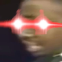

Almighty_Jado - Kapak
06-Oct-18 12:51 AM
@Rozencratz - Sonera @TheFafaltudios - Vuko !
Rozencratz - Sonera
06-Oct-18 05:57 AM
[Open RP]
[Lua, Orokin Remnant Sanctuary / Jupiter outpost (auction house)]
[4/4, 12:19]
---If you are passing through the living room at around this time you might notice something shiny lying on the couch. Upon closer inspection it is revealed that it is a Kuria, a shinny orokitty. As to what it’s doing there? Well…
At just that time, varying degree of noises spills from the barracks, shattering the current state of peace on the Sanctuary. They range from yelling, to hushed frustration, to huffing and manic laughing.---
Almighty_Jado - Kapak
06-Oct-18 11:34 AM
Kapak:
The bio lab, which is located directly across the hall from the barracks, had its doors burst open as a very angry, tall Nidus stormed out and into the hall.
“DO YOU MIND?! I AM TRYING TO WORK!! WHAT IN TARNATION ARE YOU DOING IN THERE, WHOEVER YOU ARE? IT BETTER NOT BE SOME VOID-DAMN PROCREATION! I SWEAR, KEEP IT DOWN OR SO HELP ME BALLAS I WILL RIP OFF YOUR FATHERMUCKING HEAD, FLY INTO THE VOID, FIND A DERELICT AND FEED IT TO A LEPHANTIS! VOID!”
The Nidus stormed back into the bio lab, the doors slamming shut behind him.

TheFafaltudios - Vuko
06-Oct-18 12:02 PM
Vuko:
A still half-asleep Vuko was slowly making his way out of the hangar, visually having a problem walking, and navigating in general. For some odd reason he was wearing nothing but boxers, and his hair was let loose in a weird array, as if he had to fight off a flock of condorcs. Just as he made his way to the intersection, the wild noises started causing him to lower his head and start massaging his temples, while he mumbled under his nose. - "zaraza... those damn monkeys can't even behave in the morning..." - And just as he finished, the Nidus burst out of the lab, screaming atop his lungs. The startled Vuko jumped up in surprise, and in a fit of revenge, screamed back towards the closed lab doors. - "MIND YOUR TONE, KAPAK! SOME OF US ARE TRYING TO SUFFER IN PEACE HERE!" - He responded, knowing that he probably won't hear him. - "Infested buffoon..." - He added under his nose, while still trying to massage the headache away.
Somehow the stumbling Tenno made his way into the kitchen and poured himself a glass of water, and after staring at it for half a minute decided to drink straight from the bottle he poured it out of, quickly downing almost two liters of water. After rummaging through the kitchen a bit more he managed to find a plate of brownies, which he took without a second thought and headed back to the lounge, while stuffing his face full of the chocolate goodness. With a loud 'thump' he jumped onto the couch, causing the Kuria to bounce off into the middle of the floor, but Vuko didn't see that, as he was too consumed with the plate of sweets.
Rozencratz - Sonera
06-Oct-18 12:09 PM
~The noise inside the barracks freezes instantly as the furious Nidus and the fatiqued boy yell. The culprits inside stagnating, like children getting yelled at by their parents. Even after a moment, whoever is inside dared not move or make any other noise. Then, hurried shuffling is heard, followed my muffled speaking, and then some bangs, some slaps and scampering steps.
The door of the barracks hisses to open and a Feyarch Oberon peeks out to the hallway, holding a stretched out Verida suit, with the legs on it slobbered and gnawed on, in his right hand.~
Devros von Inie
The boy looks back inside the barracks, where a furous kubrow is glaring at him
“Oi said i’ll be back in two 'ours tops! Besides, yer can’t folly me dare, yer nu waaat 'appened de last time. An' stayin' 'ere 'ill be more craic for yer.”
The kubrow, still glaring, sits on his rump by Devros’ bed which is really trashed. Speaking of, if anyone dares look inside the barracks they will come across a battlefield. The bed sheets are scattered, the pillow stuffing is in the air, clothes on the floor, and the wall above Devros’ bed have hoof markings.
The Oberon smiles and nods at Garhul, stepping out in to the hallway to let the door to the barracks close. He tip toes around to the bio lab but halts just before the door sensors activate and open. “Let him cool off? Yeah!”
He looks down to the suit in his hand and sighs. When Garhul tugs on something he TUGS. His suit looks like it could fit Kapak now. Throwing the jumpsuit over his right shoulder he looks down the hall leading to the living room and notices the battered Tenno just walking back from the kitchen. With hurried clanks of his hoofed feet, the Oberon walks over to the couch and plops down with his elbows on the back rest of the couch just next to Vuko.
“'eya! So um…enjoy de sweets, and um…are ya good?”
He eyes the other Tenno’s current state, completely missing the Kuria on the floor
TheFafaltudios - Vuko
06-Oct-18 12:10 PM
Vuko:
- “Wonn sum bwownin?” - He says with a mouthful of the chocolate cake, extending the plate with two remaining pieces to Devros. As Vuko waits for him to take some, he finishes chewing what was inside his mouth and goes on to talk, this time normally. - “Yeah, I’m good man, don’t worry. Just curing my hangover. You should really try them, they’re delicious.” - He says, shaking the plate lightly in front of the Oberon. - “Koya made ‘em. They’re not as good as Kili’s, but are still way better than most. Believe me.” - He tries to convince his buddy, accenting the last sentence in an odd fashion.
- “And what’s up with that?” - He points at the Verida suit. - “Got into an argument with Garhul?” - Vuko asks, giggling at himself.
Rozencratz - Sonera
06-Oct-18 12:15 PM
Devros von Inie
The flowery warframe eyes the plate of cookies and smiles, straightening up and with a buzz of golden energy the messy haired boy steps out. The tall, beefy looking Tenno which is only dressed in a very wide and loose shirt that hangs like a old bag on his body and a pair of equally pants (which overall might make him look like one of those shroom loving airheads), snags one of the cookies and leaps over the back end of the couch in one fluid motion to sit next to Vuko, leaving his Oberon to stand still behind him. He chomps down on it and starts chewing. His greenish golden eyes widen as he twirls his head to look back at Vuko through his busted glasses.
“Oooooh. Dis is gran'.Kili? i’ll 'av ter 'unt dat lass down fer de recipe”
The dark haired boy smirks as he looks over his shoulder to the Verida suit that is slaunched over his Oberon’s shoulder. With a shrug, he looks back at the almost fully naked colleague and says in his raspy voice
“Aye yeah. oi 'av sum business ter take care av an' he can’t go dare so he got the bleedin' full shillin' an' wanted ter stop me. He did dis to me suit an' tried ter hide somethin' oi nade….which I…”
He trails off as he spots the Kuria on the floor from the corner of his eye.
“AHA!”
He exclaims and hops off the couch to snatch the shiny thing examining it for marks, but then pauses, freezing as he turns to look at Vuko with a confused look
“Wait, 'owl on, 'angover? it’s 12 in de afternoon!”
(edited)
TheFafaltudios - Vuko
06-Oct-18 12:15 PM
Vuko:
- "Whaaaa... It's already this late?" - He asks with a confused look on his face. - "I could 'ave sworn I had Ide set an alarm for 9 o'clock. Oh well." - He says, putting the plate with the last remaining brownie onto the arm of the couch. - "A piece of good advice: do never, and I mean ever, dare Pedlek to a drinking competition. That Ostron boy has a head of steel, I tell you, a head of steel." - While talking Vuko gathers his hair using both hands and ties it up behind his head into a bun, as the hair falling into his eyes and mouth clearly started to annoy him. - "Might I ask what it is that you were looking for? Some piece of jewelery? A statuette?" - He asks, trying to peek behind Devros' shoulder to see what it is.
Rozencratz - Sonera
06-Oct-18 12:23 PM
Devros von Inie
The boy let out a low chuckle
“Pedlek? Dat goon can chucker somethin' other than nap? Oi 'aven’t seen 'imself git oyt av 'is chair in forever”
He smirked, obviously joking. Devros turned around with the Kuria in one hand and the half eaten cookie in the other. In one smooth motion, he slumps down back on the couch next to Vuko, sinking deep in the cushions and making himself comfortable. He smirks at the other Tenno and will throw the Kuria over to him. If caught, Vuko will notice – if he came in to contact with one of these before – that this one feels a bit off. The weight, color and shape are all the same but it’s like something is missing from the complete package, a certain tone.
Devros throws the rest of the cookie in his gluttonous maw and wipes his lips with the back of his hand before he spoke again
“Dat, me ticket in de Cobalt Needle Syndicate aucshun house. Tart Garhul wud 'av 'id it in de flower scratcher by de 'angar…phew! An' no bite marks, double phew” (Tart – thought)
He whipped some invisible sweat off his forehead and leans back completely letting out a sigh of relief
TheFafaltudios - Vuko
06-Oct-18 12:24 PM
Vuko:
He catches the Kuria in the air with one of his hands, and takes it closer to his face, inspecting what it is. He twirls it, rotates it, knocks on it, and even smells it, trying to find out what it is. - "I've never seen something like that. Is this some kind of art piece from the Empire? Bet 'Kino would love to see it." - Vuko half listens to Devros, consumed with trying to figure out what the statuette is. - "Ye, bet if that doggo got his jaws on it there wouldn't much left." - He says in a muffled voice, almost automatically without much thought as most of his attention is on the Kuria. - "Hold up. An auction house? Like odds and ends from all over the system? Fancy stuff and rich schmucks style?"
Rozencratz - Sonera
06-Oct-18 12:26 PM
Devros von Inie
Devros leans on the backrest of the couch with his left elbow, resting his chin in his opened palm to observe Vuko’s reaction with a amused expression. It’s like watching a puppy explore a new toy, sniffing around it, cautious but interested, seeing if it's edible. Cute. He runs a palm through his wild, puffy hair and says in his raspy voice
“Yeah, it’s somethin' loike a shiny Orokin ornament, but it’s not rayle. It’s a pure gran' lookalike tho”
He smirked. It was the perfect knock-off, apart from the fact that it didn’t have the ability to produce melodic tones as of yet, but Devors has a way of going around that
“Aye! A place wha odd an' valuable things pop up. Oi 'av been dare a couple av times an' oi can’t even describe de feelin'. it pulls yer in ya know?!”
His muddy golden eyes lit up with excitement as he speaks, trying to physically show what he is saying by pulling imaginary reigns towards himself. Vuko can clearly see the passion in Devros’ expression, as if he’s speaking from the soul…maybe a bit too vigorously.
“Oi mean so'tiz kind av shady but that’s waaat makes it entertainin'.”
He paused for a moment, looking over the other Tenno
“Fancy joining?”
TheFafaltudios - Vuko
06-Oct-18 12:26 PM
Vuko:
- “It’s a nice piece. How much are you planning to make off it?” - He asks, throwing the Kuria onto Devros’ lap. - “You must really like that place. You’re acting like a hungry Kubrow that just got a big piece of ham.” - He chuckles, poking at his behavior. At the same time he stands up and raises both his arms, one hand holding the other, and stretches himself with a characteristic bone crackling. - “Is that even a question after your enthusiastic descriptions? Of course I’m joining. - The Tenno responds to the question almost immedieatly. - “Although I need some time to... ehhh... clean myself up. Where should I meet you when I’m ready?”
Rozencratz - Sonera
06-Oct-18 12:37 PM
Devros von Inie
Devros snags the ornament straight from the air and looks up at Vuko with a shrug
“De profit is not in me gain nigh. Oi jist want ter git in!”
He smirks and throws the Kuria in the air, towards the still Oberon. Swiftly transferring to it, he snatches the Kuria off the air with his metallic hand before it had time to start falling. Devros, now in his Oberon Prime, nods towards Vuko
“Yer can meet me by de 'angar den, I’ll pay our resident butcher – oi mean 'ealer a visit…err ter clap if 'e’s still not the full shillin' aboyt de 'ustle dat went on in de barracks. But if yer take too long ter spruce up an' I’m not dare den yer can noggin straight ter Amalthea on Jupiter. Don’t worry, dare is a ceasefire todey for de…event. But still! leave yer warframe onboard”
He smiles and nods his head at the boy as a indication to him that he can go, but stays to see if he has anything to add or ask.
TheFafaltudios - Vuko
06-Oct-18 12:37 PM
Vuko:
- "Leave my warframe? That's... interesting. Thanks for the heads up. I'll prepare myself accordingly." - He says with a somewhat devious smile on his face and heads towards the hangar.
No more than a few seconds after he disappeared, he comes back jogging, his bare feet making flapping sounds as they hit the floor. He runs up to the table, and snags the remaining brownie. - "I'll take that." - He says with a smile on his face and jogs back into the hangar.
Rozencratz - Sonera
06-Oct-18 12:41 PM
Devros von Inie
The Oberon smirks and shakes his head as the boy returns for the cookie. He watches Vuko hop along and then just heads out himself, heading towards the bio lab. With tiny clanks of his hoofed feet, he makes his way to the door and with a loud “whoosh” sound of the sliding door, indicates his arrival.
The Oberon pokes his head inside to try and spot the infested fellow.
“Oy! Pak pak! Naw 'ard feelings aye? Aboyt de um..noise an' such”
He steps inside the lab, letting the door shut behind him
Almighty_Jado - Kapak
06-Oct-18 12:42 PM
Kapak:
Kapak is sitting in the corner of the room with his legs folded, his face regarding a... decapitated Grineer head. A twisting cyclone of pipes and tubes snaked into the underside of the head.
“Ah? Of course no hard feelings! Of course not! I’ve just been working on this for the last 8 hours straight and needed to be able to hear. Listen!”
As Kapak went silent, Devros could hear...
...well, nothing.
“Wonderful, isn’t it?” Kapak grinned. “I never thought that it would be possible!” He poked the head on the cheek playfully as if it were a child.
(edited)
Rozencratz - Sonera
06-Oct-18 12:54 PM
Devros von Inie
Devros eyes the severed head not with a “WTF IS WRONG WITH YOU” gaze but with a intrigued and curious look. Is he doing the headless kubrow experiment? The boy read articles of the procedure, of how to keep a severed head living long enough for it to be transferred on to a new body. But…that’s old science!
He walks towards the infested fellow and the grineer head, perking his ears as the other said to listen. But…nothing happens. Huh?
He leans closer and still nothing.
“Is de silence waaat i’m supposed ter 'ear or…am oi losin' me 'earin' again.”
He chuckled thinking of all of the times his Lenz blew up under him causing his ears to ring for weeks. Good thing injuries don’t stick that long on the void tainted
Almighty_Jado - Kapak
06-Oct-18 12:54 PM
Head:
The severed head's eyes darted towards Devros' own face before opening its mouth and screaming.
"TENNO SKOOOOOOOOOOOOOOOOOOOOOOOOOOOOM!!!!!!!!!!!!!!!!!!!!!!!!!!!!!!!!!!!!!!!!!!!!!!!!!!!!!!!!!!!!!!!!!!!!!!"
The head yelled so hard that it tipped over backwards, unplugging several of the tubes from the underside and causing the head to become lifeless again.
Kapak:
The Nidus stood there confused. "What the Void....? It's never done that before. Did I somehow restore its consciousness somehow....?"
He coughed awkwardly before standing the head back up and sticking the tubing back in. "I was experimenting with using small infested tumors to carry information," he explained, turning the head around to reveal a small, mushroom like pip sticking out behind its ear, "it vibrates in a certain pattern and basically whispers information. Not entirely practical right now, but just a fun little project."
Rozencratz - Sonera
06-Oct-18 12:56 PM
Devros von Inie
OH SHHHHH. The Oberon instinctively reeled back as the head yelled right at him. Talk about jump scares! He froze with one hand held in front of him as a shield and one dropping down to his hip for the Sonicor. Geeeze! He blinked once, then twice and let out a cackle, his frame relaxing and slightly shaking from the laughter.
“Ey! Almost made me jump oyt av me suit.”
He stepped closer to the head again and looked at the tubing. Devros is a man of biology so this kind of thing interests him greatly. Information relayed through flesh and tumors? Now isn’t that a amusing thought. You can turn hoards in to messengers, chargers in to carriers, and those flying fart spilling cunts in to megaphones or some sort. He tilts his head to the side, as he watched the Nidus put the tubing back in place, his greedy eyes slurping up everything about the project.
“Gotta say, that’s sum messed up informashun port yer got dare. but…wouldn’t others nade 'elmith to-
He paused mid sentence as if he’s listening to someone speaking.
“Ahhhh! so'tiz time already?!”
He lifts his left palm, facing it upwards and from it he projects a solar clock which indicates that it’s soon to be 12:30.
“Feck, oi 'ill be late.”
He disperses the projection and lifts his head to look at the Nidus
“Unless dat tin' really needs yisser attenshun, we can continue dis on de way aye? Oi 'av a date wi' Amalthea on Jupiter, a aucshun gaff ter attend, can’t miss it!”
He boomed with excitement, waiting to see what the Nidus says
Almighty_Jado - Kapak
06-Oct-18 12:56 PM
Kapak:
“An auction, you say?” The light twinkled off of the red crown of his head, emulating a sparkle in his eye. “Sounds... interesting!”
He whirled about, rummaging through a nearby cabinet until he pulled out a handful of fake moustaches.
“Count me in! I wouldn’t mind rummaging through old dusty artifacts without having to dive balls-deep into a Derelict!”
Kapak picked up the now talking head and placed in the corner of the bio lab, hopefully in a place where it’s babbling wouldn’t disturb anyone.
“Oi, Mephalus! Gorrus, you too! Watch the bio lab, make sure that experiment 434-D gets its nutrient supply refilled!” Kapak pointed to the corner of the bio lab where Devros would’ve been able to see two of Kapak’s engineers playing an improvised game of Komi using bullet casings as the stones. They nodded absentmindedly in response to the Nidus.
“Right! Let us go, then!”
Rozencratz - Sonera
06-Oct-18 12:58 PM
Devros von Inie
Devros slapped his hands together in a grand gesture
“Marvelous! An' yer 'ill fend more dan jist auld dusty artifacts. Oi 'av seen me share av wacky gadgets dare” He shrugged his shoulders “Oyt av place but who cares?! Andele!
He leads the way out of the bio lab and turns to head down towards the hangar
“Vuko said 'e’d join too, don’t nu if eh finished preppin' yet. Maybe he already waitin' aye?”
He glances towards the Nidus as he walked on, catching the fake moustaches which caused the Oberon to let out a low giggle.
“Ey, dat actually weurks?”
He points at the mustaches in his friends hands.
Almighty_Jado - Kapak
06-Oct-18 01:01 PM
Kapak:
“Ninety percent success rate!” Kapak smiled toothily as he held one of them over his face.
“All the time! Sometimes!”
He waved his hand at the Oberon and turned back towards his workstation and began to wipe down the surface with a cloth he procured from another drawer.
“I’ll just finish sanitizing the lab and I’ll meet with you at the place- it’s probably for the best, since I don’t want Boss man breathing down my arse anymore than he already is. Don’t worry though, I’ll be right behind you! Just transmit the location to me and I’ll see you there!”
Rozencratz - Sonera
06-Oct-18 01:05 PM
Devros von Inie
The Oberon chuckles and shakes his head at his friends antics.
“Pure, clap yer dare”
He rounds around the corner but then remembers something and quickly pokes his head through the bio lab to say
“Maybe try an' fend a trench coat? Jist a suggesshun!”
With that he pulls back and heads towards the hangar with hard clanks of his hoofed feet hoping his other companion will be waiting for him there
TheFafaltudios - Vuko
06-Oct-18 01:07 PM
Vuko:
In the hangar Devros’ companion is indeed waiting for him. He looks freshened up, his hair still a bit wet, but other than that ready to go. His Orokin-styled armor is covered in a dark grey cloak, which is supposed to conceal the gold and help him fade into the crowds. - “Took ya long enough.” - He nags the messy-haired boy. - “So! What kind of security systems are we talking about? Cameras? That’s a given. Pressure sensors? Laser detectors? Vacuum chambers? Should I bring along vault cracking equipment? Ya gotta give me something. I can’t go in blindly.” - Vuko says in a quick manner, bombarding his colleague with questions that seem to be burning on his mind. - “Talking of vision, you got the schematics of the place, right? Please tell me you got the schematics.”
Rozencratz - Sonera
06-Oct-18 01:08 PM
Devros von Inie
The flora painted Oberon rounds up the corner and sees Vuko standing in the hangar and waiting for him which made him relieved…he’s already 10 min behind schedule! But, the others vigorous and eager questions had him pause mid step to his way to his run down and dull Scmitar landing craft. If warframes had brows then the Oberon’s would definetlly furrow as he lifts his expressionless face towards Vuko
“'ooooauld up dare mucker”
He starts walking towards the other, his right hand raised as a mock stop indicator to the other
“Either yer got de wrong idea or yer are really itchin' for sum craic, aye? Dis is a friendly gatherin' fer trinket enthusiasts. We ain’t stealin' but participatin'. 'owever…”
He stops in front of the mannered boy and leans forward a bit so that his face is on level with the others
…disorder isn’t dat uncommon.”
He playfully smirks and straightens up. Well...that was a bit of a lie but there is something that is supposed to be at that auction that Devros is not leaving without and if that means causing a scene and/or stealing it then so be it. Twirling on his hoofs he heads back towards his landing craft, speaking over his shoulder on the way
“Yer can join me on me orbiter or folly wi' yisser own, make it snappy! We be behind schedule!”
TheFafaltudios - Vuko
06-Oct-18 01:09 PM
Vuko:
- "I'm definitely coming with. I... uhhh... love that dog of yours. Yes! I want to spend more time with him!" - He says as he turns to follow the Oberon, making oddly fast steps, as if they were unnatural for a human, quickly catching up to Devros. As he walks besides his companion, he mutters into his comms as quietly as possible. - "Ide, pack the vault cracking equipment." - Vuko then quickly turns towards his friend, and tries to come up with something to talk about, which seems off-putting as he doesn't chit-chat normally. - "So.. uh.. how's he been doing?.. Your doggo I mean... Did you... bathe him lately?"
~If one had a keen enough sense, or a scanner constantly looking for something, he would be able to notice that the duo is not alone in the hangar, and there is in fact something following them closely. Something invisible, that will climb into the Scimitar as soon as the ramp lowers.~
Rozencratz - Sonera
06-Oct-18 01:25 PM
Devros von Inie
The Oberon pauses for a split second as the talk of his beloved companion came up
“A-ah, Garhul 'ill not be comin', last time oi did, it caused a bit av a ruckus wi' de auctioneers..”
He shrugged as he stepped inside his landing craft and stepping to the side for Vuko to enter in to the cramped space
“Oy wus oi ter nu dat 'is pelt is dat valuable?”
He chuckled under his breath and as soon as Vuko (and the mysterious lurker) strap on he will flick the switch and lift off, projecting the hunk of metal towards his Orbiter that is hanging on the outskirts of Lua
20 min later
Amalthea on Jupiter is no a popular place, it’s just a Corpus Gas City built for harvesting the resourses in the atmosphere of this powerful planet. You’d think that mostly those that are mad or those whose greed knows no bound find themselves here, to work in this harsh environment. Either though punishment or vision, you are here – but! Not today!
Today is a very special day for those that call Amalthea their home/work place, it is a time when the Cobalt Needle Syndicate opens their floating auction house to all…well to all that know of the event. They are not very known by the general public nor do they want to be, but they did build a reputation for themselves among small circles as the best scavengers on this side of the galaxy. Is there a unopened vault somewhere? You can bet your skooma – I mean credits that they have cracked it by now. Is that a Tenno Orbiter floating out here? Zoinks! They have it in their hangar. A unknown Orokin artifact existing somewhere? Yup, it’s in their inventory. Risk their crazy lives to get a data mass that contains the thoughts of a Oroking researcher from a infested ship? Oh look, it’s in their hands. They work for their own gain, answering to none and caring about none too for all they care are recovering and selling anything that looks old or mysterious enough. Time is credits and these fellas are selling theirs for steep prices.
Once every eight years the Cobalt Needle open their floating auction house to those that know of it, each time parking it by various stations to refill the heavy ship before it jettisons off for years of scavenging. The floating auction house itself is just a retrofitted Corpus war ship to contain +40 levels of storage units and hangar bays that get filled up with a very varying degree of items. And of course, the multiple auction rooms that are lined across the top floor where they sell most of their findings to the highest bidder and everyone knows – or at least, those that are in such circles – that the Cobalt Needle Syndicate never disappoints, they offer some of the most intriguing and unique items, most that you get to see only once in your lifetime in their auction houses before some rich bastard takes it.
There are no invitations going out to call for participants for it is not some common open house where just anyone can waltz in and bid, oh no! Currency circles around this by the millions and not many are willing nor have that kind of amount on them. The Cobalt Needle is a syndicate that cares not for small fries, it’s either you bet big or go home. But, as all interesting things, words spreads fast about it and each docking more and more people gather to witness the exotic it holds onboard. Invitations are not needed anymore when you attract them just by existing – now that is a business goal.
And, being chosen as the refueling station for such a event is something akin to a honor among the Corpus that know of it, cause it attracts a lot of wealthy Condors up to your doorsteps where you can charge them anything you like for the parking fee and other trinkets or even sell them the nasty rations that they eat on a daily basis. It’s like New Year…if it cost billions.
As Devros’ Orbiter approaches Jupiter, Vuko can see from the window inside the messy haired boys private quarters (where the tour of the ship brought them) a massive ship, almost the size of the Gas City itself, floating alongside it with three tubes connecting Amalthea to the floating auction house. In appearance it looks vaguely like any other brigade but the paint alongside it is pitch black with a name alongside the left side in off-white that reads “Harlegand” Two copies of the same glyph resting on both sides of the ship that descript a yellow Kuaka that is being pierced through the head by a cobalt colored needle. There is no mistaking it, the floating auction house has arrived already and Vuko can see that things on Amalthea are very different from what he’s used to seeing.
The entire Gas City is overflowing with ships, some Corpus, some Grineer, even other Tenno Orbiters are resting around the busy docking areas. Even through Jupiters clouds, Vuko can see a lot of bussle and hussle going on at the surface of the City, as if the entire station just transformed from a resourse outpost to a entertainment and shopping center. Vendors out and about selling their poor trinkets, food being distributed through flimsy cups, parking officers keeping a eye on the docking ships and well dressed people walking through it all towards one of the entry tubes. It is clearly one heck of a event. Of course, seeing as how there are many races mingling about the security is tighter than ever and there are drones watching everything from above, keeping a eye on public peace.
Devros von Inie
“Glorious, is it not?!”
Devros squeals out, now out of his Oberon and dressed in his standard Varida suit, the excitement evident in his voice and gleaming golden/emerald eyes. This will be his second trip to the Harlegand ,and just as the first time, he finds himself unable to contain the bubbling itch. There is no erasing the wonders he has seen onboard that ship eight years ago and he’s sure that the same thing awaits him this time as well. He glances at Vuko from the corner of his eyes to see the others expression but coaxes him otherwise
“Com, com! we 'ill be landin' soon!”
He turns to make his way out of his jungle like quarters. There are vines coiling alongside the walls, the floor – that was once usually metal – is now riddled with grass and flowers. The fish tanks beaming with activity and there are many caged Kuaka on the shelves of the room. Then again, that’s how most of his ship looks like so his quarters is nothing special…there is just less grass everywhere than in here and he’s still unsure as to how his traveling companion managed such a feat but he avoids asking such questions – just let her do what she wants as long as she keeps breeding those delicious animals!
The excited Tenno exits his room and heads across his flora infested ship to the Navigator. He meets his traveling companion – the always present Titania specter – tending to a patch of Moonlight Jadeleaf near the relic refinement segment. He gives her a simple nod and stomps towards the large window to see everything in far greater width.
TheFafaltudios - Vuko
06-Oct-18 01:29 PM
Vuko:
- “Wow....” - He says quietly in amazement as the city along with the enormous auction house comes into view. - “I thought it’s going to be... smaller? I guess?.. And more exclusive?...” - His eyes pacing back and forth, trying to memorise the layout of the city, ships, and the cruiser. - “How is anyone supposed to find anything in here? It’s like looking for a needle in a haystack.” - He says as he follows in Devros’ steps, trying not to trip over any flora.
Rozencratz - Sonera
06-Oct-18 01:44 PM
")
(Size difference and locations of the Gas city to the Harlegand)
Devros von Inie
He glances towards Vuko and smirks
“It waz…from waaat oi 'eard de aucshun gaff started from de back alleys av Venus. A couple av desperate Solaris jist itchin' for sum queck earnin' ter pay bak deir debt as fast as possable an' well…word got oyt, it expanded, they bought dis ship 'ere they are nigh, pullin' in sum av de richest masses in de sytum.”
He returns his gaze towards the window as the Orbiter flies around the station, maneuvering around the other flying ships. He leans over the navigator and punches in a couple of commands to keep the orbiter steady since he has no Cephalon at the moment to automatically do it.
“Oh…they 'av almost al' av their 'aul in a digital list, easy ter fend things dere…if yer nu waaat yer are lookin' for…if not den somethin' might fend yer!”
He playfully winks at the other before looking back at his sensors.
“Betta leave it at de outskirts, we 'ill drop down via craft.”
Devros twirls on his heels and heads down towards his landing craft. Along the way, as he passes his foundry system, he pulls out from it the Kuaka arfiact that Vuko has seen before and boards his vessel, he will wait for Vuko before departing towards the gas city.
“Ah and…if anyone asks…ye work fer me. 'opin' not a problem aye?”
He will offer another playful wink, but this one more silly as his whole face twists down to pull that one eyelid making him look sort of comical
TheFafaltudios - Vuko
06-Oct-18 01:45 PM
Vuko:
- “Solaris? Are they some kind of sun worshipers?” - He looks at Devros with a clear look of confusion. The Tenno did not have much time to catch up on all the current events and factions due to other things always taking priority. Like shaking off the tail of the grineer empire, who have been tracking him since his awakening in one of their excavation sites. - “They did achieve quite a lot. I can respect that.” - He exclaims, looking away for a moment to admire the cruiser. He snaps back to his companion as he mentions a list. - “A catalogue you say? Hmmm... Where could I access one of those?” - When the messy haired boy mentions using the craft alone, the Tenno simply nods and begins to pace behind his host. As they enter the landing craft Vuko’s eyes shift for a moment at one of the pockets above the ramp, almost like he was checking if something is there, even though it was clearly empty. - “Uhhh... sure. I trust you have a valid reason, and I’m not gonna question it.” - As Devros tries to do his wink, Vuko will cringe lightly and nod out of politeness. - “Let’s roll then! I’m very curious as to what we’ll find there.”
Rozencratz - Sonera
06-Oct-18 01:45 PM
Devros von Inie
His head reels back in disbelief as the other didn’t know of the Solari. Has he been going out?! Or Mata keeping a tighter leash? Then again, this system is vast and people live out their lives on one planet let alone know what’s going on 4 moons away. The glasses wearing Tenno closes the entrance of the landing craft as soon as Vuko stepped in. While punching in some of the commands, he speaks over his shoulder to Vuko
“Paddy, after dis oi’m takin' yer dare ter clap fer yerself, nu av a class boozer dare dat is alwus lively.”
He pauses and turns to look towards Vuko, eying the other from the tips of his hair to the soles of his boots, as if looking for something with that intense golden gaze of his. Then, with a smile, he turns his head back towards the navigation and continues his button pressing as he speaks in his dense accent.
“Oi’m sure yer 'ill loike it.”
He smirks and braces as the Scimitar craft whirrs and ejects from the Orbiter, wiggling towards the Gas City. The smooth ride doesn’t take too long for it to reach the landing area of the floating outpost, maybe 2 min at best.
A light shake tumbles across the landing craft as it hits the ground and the doors twirl open to reveal the overcrowded hangar that was once the naked roof of the outpost, but now fitted to house ships of all sizes and designs. It’s a very crowded assortment despite it being out in the open. The walkways on the other hand are as barren as a desert since everyone have already scurried inside the auction house. Not a soul in sigh apart from the workers that are shuffling about checking who paid what parking fee and checking the elevators that are lined up against the left corner. The travel miles these elevators have traveled now...
Devros steps out of his craft, smiling like a little kid, and turns to Vuko with his eyes bright of excitement
“De Catalogue 'ill be inside, they 'av a speshal room dedicated jist for dat. But! More importantly!”
He twirls around on his heels with the grace of a tango dancer, to look towards the walkways. Narrowing his eyes, he frowns and mutters under his breath
“Wha is dat infested sikat? Tart 'e’d be 'ere already.”
TheFafaltudios - Vuko
06-Oct-18 01:45 PM
Vuko:
At the mention of a ‘boozer’ or what Vuko assumes is a bar, his eyes light up and he responds to Devros in a lively manner. - “Deal. I love exploring such... uhh... fine establishments.” - His face frowns in a confused manner as he is friends gaze scans his attire, but other than making a weird face he remains silent, assuming it’s all being done for a reason.
Vuko follows his companion outside, his cloak swaying with a quiet whoosh from the heavy strides. Upon noticing how empty of people the hangar is, he comments. - “Well, we are late just like you said. And there is no Kapak in sight... great... Can you call the dumbass and tell him to hurry up?”
Rozencratz - Sonera
06-Oct-18 01:46 PM
Devros von Inie
The bulky build boy frowns, one corner of his lips pulling down accompanied by a light wrinkling of his brows. He pulls out his data pad and punches in the infested frames number, hoping he’d reach him. As his pad rings he starts walking towards the elevators, motioning to Vuko to follow him.
“Oi swear, if 'e’s still back at de base oi won’t let ‘im ayt me cookin' nomore.”
A subtle smirk spread across his face as he finished what he said, unable to keep a straight face at that joke. BUT STILL! Deadlines!
Almighty_Jado - Kapak
06-Oct-18 01:48 PM
⇝Helminth:
-WHO DARES SPEAK TO THE MASTER? DOES THOU PRESENT THYSELF IN A MANNER HUMBLE ENOUGH TO.... OH. DEVROS VON INIE. IT IS WITH GREAT PLEASURE THAT I ADDRESS YOU. DO YOU WISH TO SPEAK WITH MY MASTER? I BELIEVE HE IS CURRENTLY DEPLOYED INTO THE DEN OF MERCHANTS, AMONGST THE LEGION OF THE OLD FAMILY. HIS FLESH HOLDS A SUBSTANTIAL QUANTITY OF THE LIQUID FIRE... SHALL I DEPOSIT A POINT TO SHOW YOU THE WAY?
TheFafaltudios - Vuko
06-Oct-18 01:51 PM
Vuko:
- “So you’re telling me the bastard went ahead without us? Ugh.” - He says in a very much annoyed voice as he shifts his balance from leg to leg getting anxious to get moving. - “Let’s just go Devros, I’m sure we’ll have plenty of time to find him once we’re there. It’s not like we aren’t looking for a giant, towering Nidus with a moustache. He’s pretty easy to spot.” - He says, itching to get moving, while gesturing towards the elevators, where he assumes they have to go.
~As the two chat, call, and try to find each other, the mysterious invisible something is following up to them once again. And just as before, someone with an advanced enough scanner, dedicated to finding the hidden, would be able to pick it up.~
Rozencratz - Sonera
06-Oct-18 01:52 PM
Devros von Inie
*Devros pursed his lips as the vocal Cephalon spoke through his pad. ”Never git used ter dat voice.” He chuckled under his breath as he called the elevator. It didn’t take it that long to come up and with a ding it announces it’s arrival. The messy haired boy speaks to the Cephalon as he gets on
“Trollied already 'uh? Well…tell 'imself ter wait fer us in de catalogue room…. if yer man passed by de chicken's greg” (check point)
As soon as Vuko (and the mysterious invisible presence) get on, he will press the lowest button on it to start the descend. Unless the Cephalon has anything to say to him, he will shut off the data pad and pocket it in one of the leg pockets he made in his suit. If it’s one thing that Devros hates about the current state of the Tenno wardrobe is that they all LACK POCKETS!
“Let’s 'ope yer man didn’t trash anythin' aye?”
---A couple of seconds later and the elevator slows down, jerking at the stop and with a hiss the door opens. Devros and Vuko will be presented in to a long, very lit corridor, and at the end of it is a terminal upon which two Corpus guars sat at, dressed in black jumpsuits with purple linings.---
Devros von Inie
“Oi assume yer did as oi towl an' lef anythin' deadly on board?”
He eyes the other from the corner of his vision as he started walking towards the check point.
Almighty_Jado - Kapak
06-Oct-18 02:17 PM
~Helminth remained silent, either having hung up on Devros, or just shunning him with silence. One could never tell with such a strange pile of data.
Still no sign of Kapak, however. The Infested Oaf must be up ahead.~
TheFafaltudios - Vuko
06-Oct-18 02:24 PM
Vuko:
He follows Devros in step, making little to no sound as usual, just nodding along as they enter the elevator. Vuko goes through the door with quick and short steps, as to make sure the cloak covering his armour does not reveal anything, but comes to a halting stop as his companion pops the question. - “I didn’t bring anything.” - He responds in a sly manner, while at the same time gesturing a stop sign behind himself with the hand that’s further away from the messy haired boy. He then proceeds to unconspicuosly scan the entire room for cameras, scanners, vents, consoles, or anything that would help him bypass the guards.
Rozencratz - Sonera
06-Oct-18 06:06 PM
---As Vuko looks around he will spot that the hallway itself is one of those temporary joints. The walls and floors are made out of cheap materials, parts are not even covered with metal, just the wiring hanging loose in the walls. Along the right facade, Vuko will spot a low hanging vent that is mot likely the air ventilation system for this joint. But, just as this entire hallway, that too is made flimsy and in a hurry, would mostly likely take one tug to pull the grid off---
Devros von Inie
He narrows his twinkling eyes at his friend's choice of tone when he spoke. His gaze traveling across his form as if looking for anything concealed in his robes, but seeing no unusual bulges anywhere he shrugs his shoulders and walks on.
---As soon as the duo get within a close enough distance, the two Corpus guards step forward, one of them – the one on the right with a slightly brighter purple colors – motions for the duo to stop---
Corpus guard 1
“Damn! Never pegged you as a lazy fella. Draft already started“
Spoke the bright purple one in a slurry rough tone as if he’s speaking through rubble. He drops his hands to grab on to both sides of his hip, his posture relaxed and calm. You can almost feel the smirk resting behind his helmet.
Devros von Inie
The glasses wearing Tenno puffed air through his nose, a smirk of matching sass spreading across his face
“Even after al' dees years, ye still on chicken's greg point duty? Waaat? Didn’t collect enoof points fer a upgrade?“
Corpus guard 1
He scoffed, lifting his arms up from his hip to cross them over his chest in a more defiant stance
“Psh! I’m not upgrading to hangar duty, ain’t got the medical to cover all the back ache.”
Devros von Inie
Devros throws his hands up in a shrug, his eyes traveling to the side to add to the motion
“Well 'ey, at laest they 'av better pay.”
Corpus guard 1
The black jumpsuit wearing Corpus let out a grumble that can be both interpreted as a very grumpy laugh or another more deeper scoff…my money is on the later. He uncoils his right hand from their previous lock across his chest and waves it in the air in a dismissive manner.
“Anyways, you know the drill and…”
He trailed off as he lifts his helmet, his cyan visor falling on Vuko
“Who’s this?”
Devros von Inie
With that dumb smile of his, he lifts his palm up and will roughly slap it on the others shoulder
“Dis is me new scrounger. Gran' wan too, managed ter fend dis fer me”
He lifts his palm from Vuko to dig through his makeshift pockets and pull out the Kuria, throwing it towards the guard.
Corpus guard 1
He snatches the ornament from the air in one smooth motion and brings it closer towards his visor
“Oooooh! This is a treat indeed! Haven’t seen that many of em, and with a low pitch too”
He twirls it around his hand for a moment before handing it over to his partner.
“Run that through”
He orders and the other quickly scurries towards the terminal to put it through the scanner that determines if it’s a fake or not.
“This is a much better pawn than that garbage from last time, what was it? A Paris prime bow?”
The lighter purpled guard spoke through a grin as he unclenched his pocked scanner and stepped to the side, motioning for Vuko to step up towards him with a coaxing gesture of his hand.
“Hope he told you about the policy here eh? Don’t worry, light check up cause we can’t have every rabble rouser bringing in weapons in there, not after the dock at Lua.”(edited)
TheFafaltudios - Vuko
06-Oct-18 06:14 PM
Vuko:
’Darn. This won’t do at all.’ - He thinks upon noticing the shoddy vent. - ‘This’ll collapse even if I tried to climb into it, never mind her. Guess I’ll have to do it the other way. Here’s hoping that they’re dumb enough for it to work.’
After stopping as instructed by the guards, he gives a curious glance towards one, and then the other as they chat away with Devros. Vuko proceeds to just stand there, until being represented as a ‘scrounger’ - whatever that is supposed to be - to which he replies with a simple nod.
As the first guard mentions a ‘check up’ and ‘weapons’ Vuko sees his moment and speaks up. - “Go ahead then. Make sure I don’t have anything you deem a weapon.” - With that, Vuko does raises both his hands, hoping that the jagged nature of his armour, covered by the cloak, will raise suspicion, as the fabric tightens around the metal parts.
~In the meantime, the invisible figure will attempt to sneak by the guards by waiting for one of them to come and check up on Vuko, by hugging one of the corridor walls.~
Rozencratz - Sonera
07-Oct-18 07:17 AM
---Lucky for Vuko, one of the guards was focused on him while the other was scanning the Kuria, so this invisible presence slipped by without a hitch---
Corpus guard 1
He turned on the scanner and started to run it up and down the boys body, looking for any outlines that might point to possible hidden weapons. The jagged construction of his armor did raise a eyebrow but the scanner didn’t pick up on any real danger…even thought he’s sure that the Tenno can poke a eye out with those shoulders.
Satisfied with the scan, the turns it off and straightens up, taking two steps backwards from Vuko
“Alright, you’re clean…but careful with those pointy things eh?”
Devros
The messy haired fellow smirked and slapped the shoulder of the Corpus guard in a playful manner
“Don’ worry! 'e’s gran'! as scon as I”
Corpus guard 1
He scoffed and shook his shoulder
“I’ll humor you, just cause I know you’re not stupid enough to bring in weapons”
Devros
He chuckled under his breath
“Awwww oi knew yer 'ad 'eart.”
Corpus guard 2
Before the other had a chance to throw a backlash to that, the guard scanning the Kuria lifts his head up towards his superior
“It checks out, worthy for the next flight”
He simply states
Corpus guard 1
The other one nodded his heavy helmed head and turned his cyan visor towards the two Tenno
“Go on then, you know where the Catalogue room is so run before the good stuff is snagged”
Devros
He smiled and nodded his head, walking past the check point and motioning to Vuko to follow
“Tell Efus oi said 'owaya!”
He hollered over his shoulder as he briskly walked towards the door at the end of the hall
“Now…the rayle craic begins!”
He stated with a excited tone as he glanced towards the other boy
TheFafaltudios - Vuko
10-Oct-18 03:12 PM
Vuko:
He follows Devros, walking by his right side, with a big cheery smile on his face. - “Let us see if this place is really all you tell it up to be! I have a weird feeling in my gut that’s telling me this is going to be a fun trip!”
Rozencratz - Sonera
11-Oct-18 01:17 PM
Devros
The bushy haired tenno smirked as his comrades remark, believing himself that this truly will be a exciting outing. Honestly…nothing can top this feeling.
The boy lead the way down the hall, entering through it and leading Vuko towards the Y shaped corridor. He takes a left at the parting and approaches a grand door that has intricate patterns of iron flowers on it. It shimmers in a dim sapphire color, snakes of gold coiling around the rims and meeting at the middle, both hissing at each other.
As Devros approached it triggered the sensors and the snakes parted the doors to reveal the Directory.
{kind=link}
---A grand room means one of two things. It was either built to project power and standing or it’s purpose is pure function. The Directory of the Cobalt Needle Syndicate is a delicate thing, they have crates upon crates of rare and exotic goods, so if anyone hacks the list they can find out the location of such items onboard the Harlegand. To counter this they have built a room special just for that with it’s own central computer, managed by a unique Cephalon that is detached from the Weave.
As the doors parted the duo will be presented in to a wide and very well lit circular room. The entirety of it’s walls are covered by screens, all projecting images and words in the Corpus language. They flicker with a bombardment of information that if Vuko is curious enough to read will range from item descriptions to pictures and at what time the item is going to be auctioned at. The information doesn’t linger too long on any of the screens as the words and pictures slowly travel to the bottom before it is replaced by another set of items and images from the top.
If you aim to make a full circle around the room then every 10 paces you will be greeted by smaller computer terminals with it’s screens waiting for input. They are mainly there for if anyone sees anything interesting from the main screens to look it up…or if they have a specific item to search for though key words.
{kind=link}
In the middle of the room is a grand gold ornamented pillar, framed on four points by additional outward facing screens and in the middle of it is the master of the room – Cephalon Heimdall. The stoic data being is projecting itself as a enormous rainbow feathered owl sitting atop of a floating branch, the colors mashing and fight one another on it’s glorious plumage, always shifting, always hungry for domination. The digital animal consumes the entire tip of the pillar as if it absorbed it but at the same time appearing like a large painting accompanying the room with the slightest of twitches of it’s head indicating that is indeed “living”
The digital animal simply looks at the arrivals as the doors open with it's dark orbed eyes but otherwise says nothing, continuing to silently sit on top of the branch, pressing it’s wings closer against it’s sides and only turning it’s head to gaze at the data dripping screens.
(edited)
There are still people in the room, some going around it and browsing, some with their data pads recording the items they wish to buy and some just scrolling through one of the computer terminals. Legend says that you need to spend 1000 years reading in the Directory to engulf all of it’s information.---
Devros
The brutish looking boy smiles, his eyes hungrily scanning the screens, he nudges Vuko with a gentle jab of his elbow and motions with his chin to the right, where a table was set up containing a number of data pads
“Grab yerself wan av dohs an' start 'eadin' raun de room, scan de screens maybe yer fend somethin' yer loike aye?”
Devros walks over and takes one himself, it’s of simple design for mass production so it’s not very sturdy, but Vuko will find a search engine on it…all that is missing are key words that he might spot from the screens around the room or just stuff he might think the Syndicate might have in it’s vaults. Ask Cephalon Heimdall of how much the phrase “Primed pleasure rod” is searched…you’d be surprised of the result.
“Nigh wha is dat infesto?”
Devros hums as he turns around on his heels and looks about the room, trying to spot a tall Nidus…not a difficult task…right?
Almighty_Jado - Kapak
19-Oct-18 11:04 AM
~Across the room, almost masked by the glow of all the screens and the giant avian form of the Cephalon, Vuko or Devros may be able to make out a tall silhouette. A splash of familiar magenta appeared for a moment as it moved by a display.~
Rozencratz - Sonera
23-Oct-18 11:12 AM
Devros
The beefy boy squints as his golden kissed eyes stop on a familiar sight. A wide smile started to crack across his expression as he reached out to tug Vuko by the… uhhhh… less pointy parts of his left sleeve.
“Dare yer man is, de mucker”
He huffed through his smile and started walking towards the fleshy colored blob.
“Oi! yer mangy fecker! yer ditched us aye? So rude!”
He hollered as he approached the Nidus with that wide friendly smile of his, aiming to land a playful punch to the others shoulder…or err…near it at least.
TheFafaltudios - Vuko
27-Oct-18 06:00 PM
Vuko:
The bright, vivid colours blinded him at first. Then, as his eyes slowly adjusted, his pupils shrinking, they became beautiful. Ecstatic even. He could not look away. The colours overtaking each other like waves fighting on the surface of the ocean were just hypnotising.
Devros tugging him by the sleeve had the effect of literally yanking Vuko out of a different reality, causing him to look around confused, like he had just woken up from a dream.
Almighty_Jado - Kapak
28-Oct-18 09:51 PM
~Kapak was leaning against a holographic display case, a bright coloured drink in hand while he chatted with two Corpus- one of them was rather old, with wrinkles adorning his face and an uncharacteristic full head of fluffy, greyish hair. The other Corpus was younger, and looked almost unrecognizable to literally every other Corpus- thanks to genetic preferences- but was distinguishable by his facial tattoos- most of them were curse words written in Corpus block letters.
Both of them wore some casual-formal Corpus wear, and were holding drinks not unlike the one in Kapak's hand, although the monstrous Nidus had a larger glass than the others.~
Kapak:
"...and then I told her that it got really hard!!" Kapak burst into laughter alongside the Corpus all of them giggling and trying to suppress their laughter by taking sips of their different beverages.
"Oh, man, I never thought I'd run into you guys here. Actually I didn't even know this was a thing! How long have you been coming to this thing, Halcyon?"
Halcyon:
The old Corpus responded.
"Well, it's not a common occurance, but I've been coming to this little event here for years and years, whenever it opens. Or maybe it just feels like years and years. These old bones certainly feel that way."
Halcyon shifted his drink from his right hand into the other, slowing winding his arm and rolling his neck.
Kapak:
"The arthritis acting up again, huh?" Kapak inquired, sipping from his drink, "It figures- synovectomies don't really offer a permanent solution, and I can't ever fully eliminate autoimmune disorders without... y'know... innnnnnn....vesting people."
Kapak caught his words as some other wealthy looking Corpus strolled by, giving Kapak a dirty look.
"TAKE A PICTURE! IT'LL LAST LONGER!" Kapak spat at them, stroking his moustache while he glared at the passers without even using any eyes of his own.
[1/2]
Halcyon:
"Cyrus, how many times have you come?" The old Corpus asked the younger.
Cyrus:
"Oh, I dunno, probably like only 2. We stayed for a really long time the first time, so it felt like more. Wasn't here where we bought that super early prototype of the Lenz?"
Halcyon:
"You mean the one that exploded and killed that Perrin Sequence fellow at the shooting range when we went to go test it? Ayuk, it was. Hey, K, how did you find out about this place?"
Kapak:
"Oh, well I'm with a new crew now, and one of the guys just mentioned it and it seemed interesting... in fact, there he is now! Hey, Devros!"
Kapak waved his hands at Devros and Vuko, who was trailing behind him.
"I didn't ditch y'all, I just ran into these two muckers on the landing zone and hit the bar real quick. Anddddd from there we ended up here."
Kapak shrugged before wrapping an arm around each Corpus, knocking Cyrus in the head with his drink.
"Cyrus, Halcyon, this is Devros and Vuko. Vuko and Devros, Cyrus and Halcyon."
TheFafaltudios - Vuko
05-Nov-18 09:27 AM
Vuko:
After being almost literally dragged across the room towards Kapak and his friends, he stood still, watching their faces with an uncanny fascination as if they were all one big Jackson Pollock painting. His eyes jumping from the weird Nidus to one corpus, then to the other, only to jump back to the fleshy mutant.
He continued to stare at the trio until he heard Kapak say his name, to which he responded with a small, startled jump. After the Nidus was done introducing everyone, Vuko extended his hand towards his torso, despite Kapak’s hands being wrapped around the corpus brothers.
- “Hello, and I’m Vuko.” - He said while looking right into the mutated head, clearly not recognizing that it’s his friend behind the mustache. - “Do we know each other?”
Rozencratz - Sonera
06-Nov-18 11:24 AM
Devros
A loud cackle spills from the messy haired boys throat at Vuko’s question, he reaches out to playfully bump the other with his shoulder
“Oy oy, Oi never tart dat stuff worked!
He continues laughing, pointing at Kapak’s mustache. With a nod at the two Corpus he says to them
“Ah aye aye. Alwus a pleasure meetin' folks dat don’t run frem dis mug”
He smirked pointing with his chin at the Nidus.
“But! anyway! Yer foun' somethin' yer fancy?
He eyes the enormous screens surrounding the entire room, reading the falling information, waiting to spot what he came in here to find.
Almighty_Jado - Kapak
07-Nov-18 07:08 PM
Kapak:
“It’s me you dunce,” Kapak hissed, momentarily lifting his hands away from the Corpus brothers and detaching the moustache from his face.
“I figured you’ve seen my disguises enough to recognize me with this one! ...although, this IS a new ‘stache. I guess I haven’t really used it before.”
The Corpus duo remained quiet but smiled and bowed their heads to Devros. Kapak continued.
“As a matter of fact I HAVE found something interesting. It isn’t quite a rare ancient artifact, but it is most interesting- Infested debris from some Corpus research base. It’s some kind of structural support, or maybe even a tool, covered in a low-aggression strain. The most intriguing aspect is that the Technocyte have appeared to form some kind of cocoon or chrysalis or pupa- like cyst on the end of it. If I can get my hands on it, I might be able to weaponize it!"
Kapak crossed his arms.
"And the best thing is- no one wants it! I placed a bid on it for only 5,000 credits, and no one's beaten me. Makes sense though- not many people would like to buy an Infested and, ah, likely illegal biohazard."
(edited)
TheFafaltudios - Vuko
13-Nov-18 10:25 AM
Vuko:
“Say whaaaaaaaa...” - He said, leaving his mouth wide open in awe, not believing that the freakishly tall, mustached Nidus was actually Kapak. While he was doing that, everyone could also notice that his pupils were unnaturally dilated.
“ONWARD TO THE WIERD INFESTY-THING-MAGIG THEN!” - He shouted, letting the entire room know where he’s going, and started heading towards the nearest exit door, while pretending that he’s riding a horse by doing weird steps that resulted in his shoes clicking in the rhythm of a horse’s gait while his hands were holding imaginary reins.
Rozencratz - Sonera
14-Nov-18 12:20 PM
Devros
He shook his head at Kapak’s words
“Yer weponise anythin' yer touch 'uh?”
The shout from Vuko made the bushy haired man flinch and he quickly turned his head towards the air-horse-riding mofo that yelled out so close to his ear, ready to clap his ass. However, as his head turned he caught a glimpse in the corner of his eye, a shadow…no…not a shadow…a person? However, before he could fully focus his gaze towards the person it went away…within his next blink. Devros narrows his brows but eventually shrugs his shoulders…a trick of the light perhaps!
Turning fully towards Vuko, he reaches out and grabs the hopping cheer by the collar, attempting to fix him in place
“Whoat dare rider! Yer not evn’ gonna gie de directory a glance?”
This is weird indeed…but…he hasn’t known Vuko for that long to know what’s normal and what’s weird with him. Devros throws Kapak a glance as if saying is this normal?
---The large rainbow-bleeding owl turned his head to gaze at the one starting this commotion,, his feathers ruffling as he's obviously not pleased by the sudden outburst in the Directory---
(edited)
Almighty_Jado - Kapak
19-Nov-18 03:30 PM
Kapak:
"Keep your voice down, Vuko!" Kapak hissed to Vuko after wearily eyeing the digital bird.
"Also," he sniffed, "Vuko... are you..." his voice dropped to a whisper.
"High?!"
Cyrus:
"Whoa-ho!" The Corpus giggled, nudging his brother. The older Corpus smirked.
Kapak:
"My Void, you ate some of those brownies Koya made this morning, didn't you? I can smell it."
He sighed.
"They're the ones with the extra.... special... ingredient, aren't they?"
(edited)
TheFafaltudios - Vuko
19-Nov-18 03:51 PM
Vuko:
He turns around on his imaginary horse, and does the same gallop routine, but this time with no shouting and with a hunched back, like he’s trying to gallop while sneaking.
Vuko comes uncomfortably close to Kapak’s face, and mirroring him with the whispering he says - “What? Me? Neeeeever. You know too good a boy for such wild and nasty things.” - he mocks the idea in a voice that makes it clear the opposite is true. - “And I don’t know what you are talking about. I just grabbed some chocolate deliciousness from the kitchen...” - He finishes up the sentence with a weird, and much exaggerated wink.
Before the Nidus had time to respond, Vuko looked past him, and with a “Ooooh! Shiny!” maneuvered around him to the nearest directory terminal.
Rozencratz - Sonera
20-Nov-18 11:28 AM
Devros
Devros’ expression went from wide-eyed surprise, to confusion and eventually ending up at horror, his hand shooting up to cover his mouth. Brownies?! Wan av de brownies oi ate?!” His gaze shifts towards Vuko as he clenched his teeth *” Wait…he ate lashings more than me so maybe…dat is not me future…but…he* can cum back. ”
Panicked eyes quickly dart around the room, looking for someone…something, that doesn’t belong here. *” Maybe ‘e ‘ill not…It ‘as been donkey's years.” He consoles himself and smiles ”Yeah!”
Feeling more at ease, his hand drops from his face and he straightens up, his playful sandy orbs twirling towards Vuko as he hopped towards one of the consoles. He looks up at Kapak and points towards the runaway vagabond
“Can you…keep a mince pie on 'imself? Oi nade ter chicken's greg somethin' oyt”
Almighty_Jado - Kapak
30-Nov-18 12:36 PM
Kapak:
"Don't worry, my culinary friend," Kapak said, patting Devros' shoulder, "Only eating one of those things'll give you a little bit of a buzz, but nothing more. Unless you're allergic to the contents, but that I can deal with."
Kapak coughed.
"Vuko needs to brush his teeth though, voiddamn that be some hot breath."
Kapak jogged towards Vuko, calling his name.
Cyrus:
"So, uh......" the young Corpus commented, "come here often?"
Halcyon:
"Shut the suy'k up you trashbin," the older one hissed, "you suck at small talk."
He turned and smiled at Devros.
"Apologies for my dumbarse brother, he's probably lost some brain cells after being trapped on an Infested vessel."
Cyrus:
"Hey! That was a traumatizing experience!"
Halcyon:
"Clearly."
TheFafaltudios - Vuko
30-Nov-18 12:48 PM
~As Kapak gets closer to the terminal and Vuko he will see that he is utterly and fully immersed in watching what seems to be a golden statue in a phallic shape while giggling uncontrollably.~
Rozencratz - Sonera
06-Dec-18 01:12 PM
Devros
The bushy haired man let out a chuckle at the brothers antics, despite still feeling a splinter of unease about the brownie situation. It won’t happen right? Yeah yeah! Even if Garhul isn’t here, he’s confidant it will stay as it is.
He lifts his glassed eyes towards the two brothers and waves his hand in the air in a dismissive manner
“Not nade for that…”
He paused his waving as a through just hit him. The expression on the boy changes from friendly to excited.
“Actually…you two might actually 'elp me oyt!”
He boasted, almost sending a echo around the screen-lit room. Hopping on his heels, he sprungs around and darts towards the nearest terminal which was a couple of paces away, up against the large wall sized screens. He turns around towards the two brothers, coaxing them to come towards him.
Almighty_Jado - Kapak
10-Dec-18 03:30 PM
Kapak:
"Vuko, what th-" Kapak stopped when he saw the golden figure and couldn't help but give out a snort.
"Okay, that's pretty funny, but Vuko you gotta reel it in-" Kapak began to reach for Vuko's arm.
"Geez, it's like someone swapped out the tetrahydrocannabinol in the cookies for cocaine..."
~In the meantime, the two brothers exchanged a brief glance before shrugging and following Devros to the terminal's screen.~
Halcyon:
"What can we do for you? Any friend of K's a friend of ours."
TheFafaltudios - Vuko
10-Dec-18 06:33 PM
Vuko:
As Kapak grabs his arm, he simply turns around and looks at him confused. “Reel it in? Are we going fishing? I could go for some fish. I love me some lungfish.”
Rozencratz - Sonera
21-Dec-18 11:59 AM
Devros
He types in a few commands on the available list that is bleeding on all of the screens, and out a image of a Cephalon pops up as one of the listed items. The Cephalon is depicted as a purple feather with one single white strand poking up from the base. The two Corpus can read on the screen, if they wished so, that the Cephalon is named Q’ara as well as a short description of the item that went:
Item name: Q’ara
Acquisition: Bought
Item information: High class Cephalon of Orokin craftmanship. Can be used as a Orbiter companion or personal assistant. A plant garden is advised to be kept in or around the ship/home
Rarity: High
Top Bidders:
-Varund Vagatosh – 100.000
- Unakok Falum – 98.000
- Akir – 97.400
- Girum Opanil Carik – 94.100
- Hangal – 90.000
Devros looks towards the duo, pointing towards the screen with a nudge of his chin
“Can yer fellas 'elp oyt an' put down a offer for dat? Chucker not, Oi’ll pay it oyt wi' me credits oi just…
He paused looking to the side, as if searching for someone, before returning his gaze back at the brothers
“…don’t want me name ter be up there…personal reasons yer nu.”
He chuckled, nervously, hoping the duo would understand.
---The screen in front of Vuko lit up with a flash as a window popped up saying “Do you wish to set a offer?” for the item he was viewing---
(edited)
Almighty_Jado - Kapak
23-Dec-18 04:01 PM
Kapak:
"Now don't you press that!" Kapak said sternly as he kept his grip on the Tenno's arm. He pulled him away from the screen and attempted to drag him back to the the others.
"Don't make me dialyze you!"
Cyrus:
Back where Devros was, the Corpus brothers leaned over to look at the Cephalon's page.
"Oh, my! An older model of Cephalon, quite high class indeed. Well, me and my brother DO have quite deep pockets, so..."
Within seconds, and following a flurry of keystrokes across the screen, the entry for Q'ara now had a new top bidders' list:
Top Bidders:
- Cyrus Prodman - 150.000
- Varund Vagatosh - 100.000
- Unakok Falum – 98.000
- Akir – 97.400
- Girum Opanil Carik – 94.100
Halcyon:
"It's my brother and I," the older Corpus corrected, taking a sip from his drink. He didn't seem perplexed at all by the random and sudden bid of his brother.
"I thought you went to school, bro."
TheFafaltudios - Vuko
23-Dec-18 04:11 PM
Vuko:
Hearing Kapak scream not to do it, there was only one possible outcome. With a big, dumb smile painted across his face Vuko was about to press the button just mere milliseconds before the Nidus yanked his hand away, ending in him hitting a random part of the screen.
As he was being quite literally dragged away from the terminal, he decided halfway through that the best way to go about things is to go limp.
And so he did. Just as his body hit the ground with a thump and laid down on the ground, Vuko attempted to escape his friends clutches by rolling on the ground sideways, somehow thinking that it’ll make him unnoticeable.
(edited)
Rozencratz - Sonera
28-Dec-18 12:29 PM
Devros
The boy smiled and nodded at the two brothers
“Tanks lads, oi owe yer wan!”
He chuckled and looked over his shoulder to see the situation with Kapak and Vuko…which wasn’t a great one to boot. He tilts his head and looks back at the Corpus
“Alright let’s uh…get one with some sight seeing huh?”
He pushes himself off the console and started briskly walking towards Kapak, to try and give a hand ”You cannot help” A voice ringed through his head and he froze mid step, his eyes narrowing. It’s been a long time since he’s heard his voice…this is not good… Garhul is not here to fix it! He felt panic rising from deep within him, cold sweat dripping down his forehead. ”You cannot help” He heard it repeating again and he clenched his teeth, his hands coiling in to fists ”Go away” He growled from under his breath. Whatever he ate, whatever Vuko gave him…was spoiled!
He started walking, stomping towards Kapak and Vuko, stopping just a few paces from them and from the limp boy.
“Can we move on?”
He huffed from under his nose, his voice sounding more irritated than from his usual cheerful self, the smell of unease oozing from him. His golden eyes dropping to gaze at Vuko
Almighty_Jado - Kapak
04-Jan-19 06:23 PM
Kapak:
"You daft c- come here!"
Kapak followed after Vuko's rolling torso at walking pace, his massive stride allowing him to keep pace with the Tenno.
"Move aside people! Move please, thank you!"
Kapak yelled and waved his arms to move bystanders out of the path of the 'furiously' rolling Tenno.
Cyrus:
"Is he usually like that?" Cyrus turned to Devros as the group casually followed Vuko.
Kapak:
"We can move on as soon as Vuko's back under control- yagh!"
Kapak extended his palm, and like a dart, out shot a slimy tendril with a needle-like tip. It penetrated Vuko's side and was enough to stop him from rolling. A quick injection of morphine from the tendril would also ensure a painless prick, although it was likely Vuko was already high enough to not even feel it.
Kapak stood Vuko up forcefully and gripped him by the shoulders.
"Now, I'm gonna soak up all that junk that's flowing through your veins and you're gonna stand by me while I do. Then we're going to continue on our nice little trip with no problems, y'hear me?"
TheFafaltudios - Vuko
13-Jan-19 11:16 AM
Vuko:
With his body a jellyfish, Kapak had basically no problem securing him. He also was successful injecting Vuko, as his patient didn’t even realise what had happened.
Once on his feet, the Tenno was looking right at the Nidus’ head as he was explaining something that was clearly going over his head. He was just nodding along, pretending to know exactly what he means. “Yes daddy.” He finished up once his friend stopped speaking, a daft smile on his face.
Rozencratz - Sonera
15-Jan-19 12:47 PM
Devros
The flat faced boy turned to look at one of the Corpus, providing a simple shrug of his shoulders as a opening answer to his question
“If he is den i’d invite 'imself more frequently ter me grub parties.”
A shadow of a smirk can be seen spreading across his lips, but the joke itself didn’t feel as hearty as it should have been, his mind fighting on two fronts.
Noticing that the Nidus got it under control, he quickly cast a glance at the perched digital owl sitting atop the middle of the room – only to be greeted by two unblinking obsidian gems staring at him. ”YIKES” He invardly jumps at their intensity and quickly turns around
“Gran' so let’s uhhh….scurry along fast. We can catch wan av de aucshuns.”
He starts briskly walking towards the only door in the room, which they entered through. "You cannot run "He hears it again but choses to ignore it, getting through this shit and going back to Garhul is priority one right now!
(edited)
Almighty_Jado - Kapak
04-Feb-19 09:25 AM
Kapak:
The Nidus did his best not to react to Vuko's.... suggestive remark.
Kapak wrapped his fleshy claw over Vuko's shoulder, guiding the Tenno towards the door that Devros was headed for. Hopefully he would be a little more grounded now that Kapak had started filtering his blood.
"After you, Devros! Everything should be much better now that we have this guy under control. Um, sorry Mr. Owl!" Kapak waved apologetically at the cephalon's holographic form before hurrying to catch up with Devros.
Cyrus & Halcyon:
The two Corpus giggled amongst themselves before following the rest of them, sipping down the last remains of their drinks.
TheFafaltudios - Vuko
21-Mar-19 07:07 AM
Vuko:
He compliantly walked towards where Kapak was guiding him, giggling under his breath the entire time, clearly not giving a flying f about the entire situation, and instead suddenly becoming mesmerized by how his feet were able to walk one in front of the other.
Rozencratz - Sonera
09-Apr-19 10:05 AM
Devros
The boy leads the group out of the Directory and back at the corridor which they used before. This time, however he takes a left turn, down the intricate designed hallway that looked to be fit more for a royal castle than a auction ship. However, the beauty did little to distract Devros, and the boy was getting more jittery, his hands frequently brushing the back of his neck, his eyes bouncing to corners as if he’s looking out for sudden jump scares, his forehead slowly getting damp.
“So uh…”
I clears his throat, maybe some talking will ease his racing mind?
“Oi wus tinkin we cud chuck oyt wan av de aucshuns in progress while we wait on de final verdicts for our items 'm?”
He smiled as he glanced at Kapak and the Corpus brothers, his sunset-painted eyes dimming behind his old busted glasses.
“Lot’s av interestin' stuff ter clap there….”
He brushed behind his neck, dipping his gaze at Vuko’s state.
…maybe even distract 'imself.”
He chuckled under his breath and returned his gaze to the hallway in front of him, which was getting more rich with every step. The ferrite floor is morphing in to a vibrant red and gold accented carpet, the boring metallic walls turning in to something akin to wall paintings with the intricate designs and use of decoration. The light also taking a dimmer tune to accommodate the shift in theme as the party moves deeper in to the belly of the ship.
TheFafaltudios - Vuko
25-Jul-19 03:53 PM
 1
1
 1
1
Vuko:
Gives @Kapak da gae
1
1
1
1
1
1
1
1